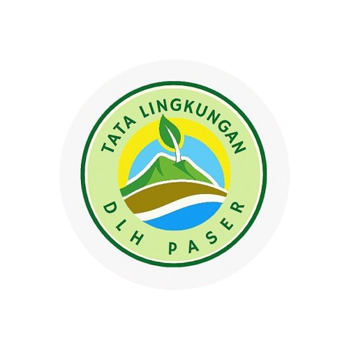

Menurut informasi dari berbagai sumber, Air Terjun Doyam Seriam merupakan salah satu destinasi wisata alam unggulan yang terletak di Desa Modang, Kecamatan Kuaro, Kabupaten Paser, Kalimantan Timur. Air terjun ini dikenal dengan keindahan alamnya yang masih sangat alami, dikelilingi oleh hutan tropis yang lebat dan udara yang sejuk.
Nama "Doyam Seriam" sendiri berasal dari bahasa daerah setempat, di mana "Doyam" berarti air terjun dan "Seriam" adalah nama yang diberikan oleh masyarakat terdahulu yang pertama kali menemukan lokasi ini. Menurut masyarakat sekitar, air terjun ini tidak hanya memiliki nilai keindahan, tetapi juga menyimpan nilai historis dan budaya yang penting.
Air terjun ini memiliki aliran air yang jernih dan bertingkat-tingkat, menciptakan panorama yang menarik bagi wisatawan. Menurut laporan dari pemerintah daerah, akses menuju lokasi memang cukup menantang karena medannya yang terjal, namun tengah diupayakan perbaikan dan pengembangan, termasuk pembangunan fasilitas seperti camping ground dan peningkatan jalan menuju lokasi wisata. Secara keseluruhan, Air Terjun Doyam Seriam sangat cocok dijadikan sebagai tujuan wisata alam, terutama bagi para pecinta petualangan dan ketenangan di tengah keasrian alam.